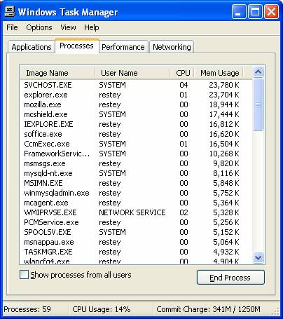
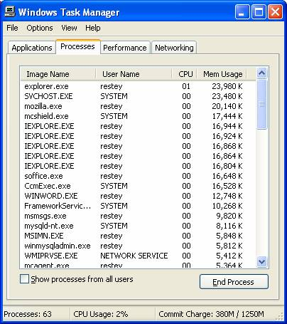

Thread
/ Lightweight versus Process / Heavyweight
Mozilla / Netscape use Threads compared to Internet Explorer's Process
technology.
The first image shows both
applications at startup. Mozilla starts up with 19MB of memory
used, IE 17MB. We can say initially both applications use the
same memory resources.

The next example we bring up the same web page in 5 browsers, to keep
consistency. Clearly Mozilla is only using one process and memory
utilization has slightly increased. From 18,944KB to 20140KB,
just
a little over 1MB for 5 browser windows. IE, however, is a
constant drain on resources, we now see 5 processes that accumulate
about 17KB * 5.
